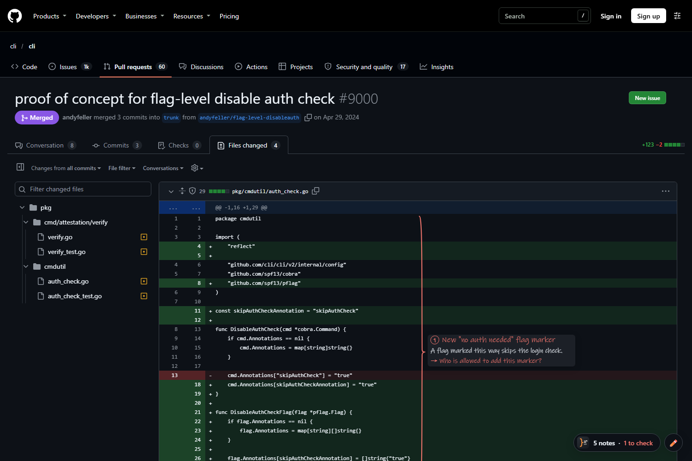

PR Explainer writes short, handwritten notes right on the code of your GitHub pull requests. You read faster, you understand everything, and you stay the reviewer. PR Explainer écrit des notes courtes, à la main, directement sur le code de tes pull requests GitHub. Tu lis plus vite, tu comprends tout, et c'est toujours toi qui fais la review.
Chrome, Edge & Brave · Uses your existing subscription · No API key Chrome, Edge et Brave · Utilise ton abonnement existant · Aucune clé d'API
the new bottleneckle nouveau goulot
With AI, pull requests grow bigger and come faster. Someone still has to understand them before they ship. PR Explainer doesn't review for you: it gives you a guided read, so you stay in control of your codebase. Avec l'IA, les pull requests sont plus grosses et arrivent plus vite. Quelqu'un doit quand même les comprendre avant la mise en production. PR Explainer ne fait pas la review à ta place : il te guide dans la lecture, pour que tu restes maître de ton code.
Instead of scrolling the diff file by file, read the notes in order and only stop on the red ones. Au lieu de scroller le diff fichier par fichier, lis les notes dans l'ordre et arrête-toi seulement sur les rouges.
what it doesce qu'il fait
No new tool to learn. Open the “Files changed” tab like you always do.Aucun nouvel outil à apprendre. Ouvre l'onglet « Files changed » comme d'habitude.
Every changed block gets a hand-drawn brace and a few words. Click a note to see why it changed.Chaque bloc modifié reçoit une accolade tracée à la main et quelques mots. Un clic montre le pourquoi.
Each note has a colour, so your attention goes where it matters.Chaque note a une couleur, pour mettre ton attention là où ça compte.
Notes are ordered like a story: the core of the change first, then where it's used, then the tests.Les notes suivent un fil : le cœur du changement d'abord, puis ses usages, puis les tests.
Circle some code, or draw an arrow between two places, and ask. The answer is written right next to it.Entoure du code, ou trace une flèche entre deux endroits, et pose ta question. La réponse s'écrit juste à côté.
If the repo is cloned on your machine, the AI reads the surrounding code to explain the impact. Found automatically.Si le dépôt est cloné sur ta machine, l'IA lit le code autour pour expliquer l'impact. Détecté tout seul.
Runs on Claude (Pro, Max, Team) or ChatGPT (Plus, Pro, Team) through their official tools. English or French.Fonctionne avec Claude (Pro, Max, Team) ou ChatGPT (Plus, Pro, Team) via leurs outils officiels. En français ou en anglais.

two minutesdeux minutes
The installer checks everything, installs what's missing (after asking) and signs you in.L'installeur vérifie tout, installe ce qui manque (en demandant d'abord) et fait les connexions.
Download the ZIP and extract it to a folder you'll keep, e.g. C:\Tools.Télécharge le ZIP et extrais-le dans un dossier que tu gardes, ex. C:\Outils.
Connects GitHub and your Claude or ChatGPT account in the browser. Already have Codex or Claude Code? It's reused.Connecte GitHub et ton compte Claude ou ChatGPT dans le navigateur. Tu as déjà Codex ou Claude Code ? Il est réutilisé.
On the extensions page that opens: Developer mode → Load unpacked → paste the path (already copied).Sur la page des extensions qui s'ouvre : Mode développeur → Charger l'extension non empaquetée → colle le chemin (déjà copié).
no surprisespas de surprise
No server of oursAucun serveur à nousYour code only goes to GitHub and to your AI provider, exactly as if you used their tools yourself.Ton code ne va qu'à GitHub et à ton fournisseur d'IA, exactement comme si tu utilisais leurs outils toi-même.
Read-only AIIA en lecture seuleClaude Code runs with Read/Grep/Glob only; Codex runs in its read-only sandbox. Nothing gets modified.Claude Code tourne avec Read/Grep/Glob uniquement ; Codex dans son bac à sable en lecture seule. Rien n'est modifié.
Locked-down helperProgramme local verrouilléOnly the extension can call it, every request is validated, and page content never reaches a command line.Seule l'extension peut l'appeler, chaque requête est validée, et le contenu de la page ne passe jamais en ligne de commande.
You choose the contextTu choisis le contexteTurn off project reading to share the diff only. Clear saved analyses anytime.Coupe la lecture du projet pour ne partager que le diff. Efface les analyses enregistrées quand tu veux.
FAQ
Yes. PR Explainer is open source (MIT). It uses the Claude or ChatGPT subscription you already pay for, through their official command-line tools, so there's no API key and no extra bill.Oui. PR Explainer est open source (MIT). Il utilise l'abonnement Claude ou ChatGPT que tu paies déjà, via leurs outils officiels en ligne de commande : pas de clé d'API, pas de facture en plus.
No, and that's the point. It doesn't approve or comment for you: it helps you understand the change quickly, so your review is faster and better informed.Non, et c'est voulu. Il n'approuve rien et ne commente pas à ta place : il t'aide à comprendre vite le changement, pour une review plus rapide et mieux informée.
Browsers don't let extensions run programs on your computer. A small local helper does that part (reading the PR, starting Claude or Codex), and the browser only lets it talk to this extension. The installer sets it up once.Les navigateurs interdisent aux extensions de lancer des programmes sur ton ordinateur. Un petit programme local s'en charge (lire la PR, lancer Claude ou Codex), et le navigateur ne le laisse parler qu'à cette extension. L'installeur le met en place une fois.
Yes: PR Explainer reads pull requests through your own GitHub login, so you see exactly what you already have access to.Oui : PR Explainer lit les pull requests avec ta propre connexion GitHub, tu vois donc exactement ce à quoi tu as déjà accès.
The extension and the helper are cross-platform, but the one-click installer is Windows-only for now. Contributions welcome!L'extension et le programme local sont multiplateformes, mais l'installeur en un clic n'existe que pour Windows pour l'instant. Les contributions sont bienvenues !
Free, open source, and running on the subscription you already have.Gratuit, open source, et sur l'abonnement que tu as déjà.